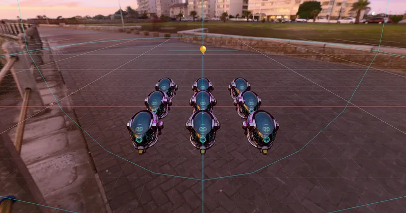

3D Lighting & Environment Light
PointLight with glTF - RedGPU WebGPU Example
Demonstrates PointLight attenuation interacting with a glTF PBR model.
물리적 거리 감쇄 PointLight와 glTF PBR 모델의 조명 예제입니다.

3D Lighting & Environment Light
Demonstrates PointLight attenuation interacting with a glTF PBR model.
물리적 거리 감쇄 PointLight와 glTF PBR 모델의 조명 예제입니다.
